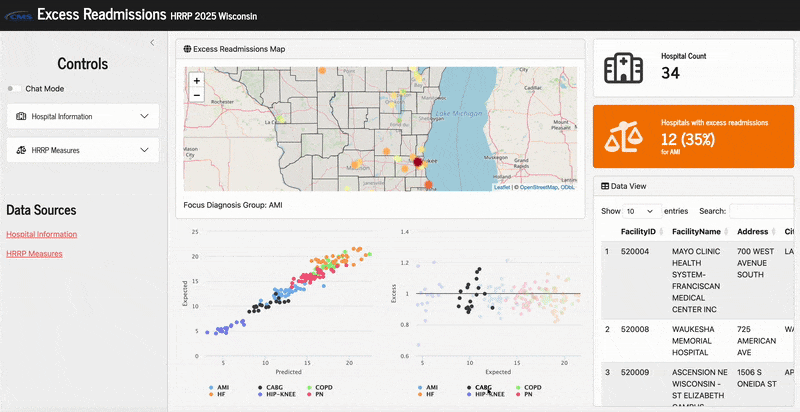

How we can use natural language to interact with and manipulate app content.
Author
Alex Zajichek
Published
May 23, 2025
I’ve been exploring the various AI tools that Posit has been releasing over the past few months, and I gotta say, they are really cool and incredibly fun to work with. I wanted to learn how to use packages like ellmer, shinychat, and querychat to enable the user of an R Shiny application to explore a dataset and dynamically manipulate app visuals/results using natural language in chat format. So I built and deployed an app that explores results from the Hospital Readmissions Reduction Program (HRRP) for the state of Wisconsin, using these features. I go through it in the video above 👆, or you can read on for a text description.
The App
Here’s what it looks like in action:

It was deployed to Posit Connect Cloud. That, in combination with using Google Gemini as my LLM provider, made the development and deployment of this app completely free. Feel free to access the live app and/or the source code.
Each year hospitals across the United States are penalized by CMS for having too many readmissions in one or more of the following diagnosis groups:
AMI: Acute myocardial infarction
CABG: Coronary artery bypass graft surgery
COPD: Chronic obstructive pulmonary disease
HF: Heart failure
TKA/THA: Total hip/knee surgery
PN: Pneumonia
It is a 3-year reporting period in which the readmissions are tallied, and then the hospital is penalized for the duration of a subsequent fiscal year (the penalty amounts to 3% maximum of all Medicare reimbursements). Only ~50% of hospitals actually receive penalty, and the program only applies to patients on Medicare.
Penalty calculation
The penalty is calculated (in a very simplified description) based on the hospital’s relative performance of the excess readmission ratio, which is the ratio of the hospital’s predicted and expected readmission rates. These are estimated for each diagnosis group and then aggregated across the groups to determine the overall payment penalty. See more here.
The predicted and expected readmission rates are estimated from a generalized linear mixed effects model via logistic regression (specifically, it is a random-intercept model). They risk adjust hospitals’ readmission rates by entering numerous risk factors in these models (like comorbidities, etc., which you can find details here). They use this model to tease out an individual hospital effect on the readmission rate after accounting for the case-mix of that hospital, and compare this individual effect to the “average” hospital. If you’re worse than average, you get penalized (again, as a simple description). So overall, the ratio meant to quantify how likely a patient is to be readmitted to your hospital versus the average hospital after accounting for how sick they are.
In this app, the main metrics we are working with are what are described above:
Excess readmission ratio
Predicted readmission rate
Expected readmission rate
Data source
The datasets themselves that contain this data come from the CMS Provider Data Catalog. Specifically, we use the following:
In the application, the datasets are scraped directly from the web source by using HTTR GET request to get metadata about the dataset, constructing the appropriate file path, and then importing it as a CSV file.
You can see how I did this here by creating a utility function that takes a datasetid as identified on the source website and imports the dataset (so this can be used for any dataset in the catalog).
Code
# Load packageslibrary(tidyverse)# Function to import dataset from CMS Provider Data Catalog (see https://github.com/zajichek/carecompare/blob/b1fa89382adfe77bd5f230f4162b03767ece10ea/R/FUNCTIONS.R#L99)pdc_read <-function(datasetid =NULL, ... ) {# Check for inputif(is.null(datasetid)) stop("Please specify a dataset identifier.")# Make the url url <-paste0("https://data.cms.gov/provider-data/api/1/metastore/schemas/dataset/items/", datasetid, "?show-reference-ids=false")# Make the request, extract the content request <- httr::content(httr::GET(url))# Update the variable downloadurl <- request$distribution[[1]]$data$downloadURL# Import the dataset readr::read_csv(file = downloadurl, ... ) }## Import datasets# Hospital informationhospitals <-pdc_read(datasetid ="xubh-q36u", guess_max =10000) # https://data.cms.gov/provider-data/dataset/xubh-q36u# HRRP outcomeshrrp <-pdc_read(datasetid ="9n3s-kdb3", na =c("N/A", "", " ")) # https://data.cms.gov/provider-data/dataset/9n3s-kdb3
The datasets look like this:
Code
hospitals
# A tibble: 5,384 × 38
`Facility ID` `Facility Name` Address `City/Town` State `ZIP Code`
<chr> <chr> <chr> <chr> <chr> <chr>
1 010001 SOUTHEAST HEALTH MEDICAL … 1108 R… DOTHAN AL 36301
2 010005 MARSHALL MEDICAL CENTERS 2505 U… BOAZ AL 35957
3 010006 NORTH ALABAMA MEDICAL CEN… 1701 V… FLORENCE AL 35630
4 010007 MIZELL MEMORIAL HOSPITAL 702 N … OPP AL 36467
5 010008 CRENSHAW COMMUNITY HOSPIT… 101 HO… LUVERNE AL 36049
6 010011 ST. VINCENT'S EAST 50 MED… BIRMINGHAM AL 35235
7 010012 DEKALB REGIONAL MEDICAL C… 200 ME… FORT PAYNE AL 35968
8 010016 SHELBY BAPTIST MEDICAL CE… 1000 F… ALABASTER AL 35007
9 010018 CALLAHAN EYE HOSPITAL 1720 U… BIRMINGHAM AL 35233
10 010019 HELEN KELLER HOSPITAL 1300 S… SHEFFIELD AL 35660
# ℹ 5,374 more rows
# ℹ 32 more variables: `County/Parish` <chr>, `Telephone Number` <chr>,
# `Hospital Type` <chr>, `Hospital Ownership` <chr>,
# `Emergency Services` <chr>,
# `Meets criteria for birthing friendly designation` <chr>,
# `Hospital overall rating` <chr>, `Hospital overall rating footnote` <chr>,
# `MORT Group Measure Count` <chr>, …
Code
hrrp
# A tibble: 18,510 × 12
`Facility Name` `Facility ID` State `Measure Name` `Number of Discharges`
<chr> <chr> <chr> <chr> <dbl>
1 SOUTHEAST HEALTH M… 010001 AL READM-30-AMI-… 296
2 SOUTHEAST HEALTH M… 010001 AL READM-30-CABG… 151
3 SOUTHEAST HEALTH M… 010001 AL READM-30-HF-H… 681
4 SOUTHEAST HEALTH M… 010001 AL READM-30-HIP-… NA
5 SOUTHEAST HEALTH M… 010001 AL READM-30-PN-H… 490
6 SOUTHEAST HEALTH M… 010001 AL READM-30-COPD… 130
7 MARSHALL MEDICAL C… 010005 AL READM-30-CABG… NA
8 MARSHALL MEDICAL C… 010005 AL READM-30-HIP-… NA
9 MARSHALL MEDICAL C… 010005 AL READM-30-HF-H… 176
10 MARSHALL MEDICAL C… 010005 AL READM-30-PN-H… 305
# ℹ 18,500 more rows
# ℹ 7 more variables: Footnote <dbl>, `Excess Readmission Ratio` <dbl>,
# `Predicted Readmission Rate` <dbl>, `Expected Readmission Rate` <dbl>,
# `Number of Readmissions` <chr>, `Start Date` <chr>, `End Date` <chr>
Code summary
This article is mainly focusing on the part of the code that enables the connection and use of LLM’s to chat with the data, but I wanted to make a few notes about the rest of the app. Feel free to browse the complete app source code here.
First, the global.R file creates the objects that are available during the app runtime. It is executed once at app launch. This is where the datasets are imported and cleaned, and the base map of Wisconsin is created (using leaflet). This is done so the app doesn’t have to redraw the map everytime from scratch, only the points need be updated as things change (with leafletProxy). This file is also where the first step for setting up querychat occurs.
Second, the bslib package is used to drive the app layout in ui.R, and works well with querychat. The plots in the app are made with the highcharter package, which I just discovered as an alternative to plotly and I think it may be my new favorite plotting library (but don’t worry, I’ll always continue using the latter + ggplot2). Also, I found the datamods package to be really useful for creating the dynamic group filters in the traditional inputs, which is what makes the hospital filters simultaneously update as other columns are filtered. This is done with the select_group_* functions.
Finally, the general strategy in server.R to implement the toggle between traditional filters and the “chat-mode” was to have a reactive data frame that updates based on conditional logic via the status of the toggle input (via input_switch). We either apply the set of filters to the master dataset in the app, or just provide the dataset returned by the chat object.
Implementing chat functionality
There are two main packages you need to have installed to make this work:
ellmer: The package drives the backend for sending and receiving messages to the LLM
querychat: Sets up the UI components and server (using ellmer internally) to chat within your app, build and execute SQL statements on your dataset, and return the result to be used within the app.
Step 1: Initialize the connection
The first step is to initialize the connection to the LLM of your choice, supply your dataset, and additional information to help it perform better using the querychat_init function. The following snippet is what is implemented in the app (or see it here):
Code
# Configure the chat objectquerychat_config <-querychat_init(df = master_dat,tbl_name ="HospitalHRRP",create_chat_func = purrr::partial(ellmer::chat_gemini),greeting ="Ask me a question about the HRRP in Wisconsin",data_description =readLines("data_description.md") )
Prompting strategy
The overarching premise of this package is that the LLM’s can be great at generating SQL queries. So when we use the chat in the app, no data is ever being sent to the LLM. Only metadata about the dataset. Then it can translate our natural languge inputs into curated SQL queries. See more here. The tblName argument is what will appear in queries generated in the chat.
Choosing an LLM provider
I used Google Gemini because it’s free and I didn’t have to provide payment information to start using it. It’s not the optimal model to use (you can see recommendations here), but it actually does give pretty decent results and is definitely sufficient for demonstration purposes. I provided more detail on configuring the API in this blog post.
Providing a data description
What I’ve found to be the most important part: the data_description argument. This is your chance to supply the LLM with some initial information to consider before it starts trying to generate queries on your data. By default, it will only give it some basic information (see here), but provider more detail and context will make it work a lot better and give a lot more flexibility into how the chat interaction can occur.
In my app, I created a data_description.md file that I feed into this argument which gives the LLM a detailed description of not only the columns in my dataset, but the context in which the data is for (i.e., hospital readmissions). The most important part in my file to get things working robustly was this line:
“Important Note:: The hospital information fields are all in capital letters (all characters), so queries on this data should always capitalize all characters when searching for specific cities or counties.”
Since the hospital location columns in the raw dataset were in all capital letters, the LLM would not generate sufficient queries without this unless I also capitalized specific cities/counties in my prompts. That’s not very natural, so this a priori prompt helped resolve that. Now in my app when I ask for “hospitals in marathon county”, it will correctly generate a query that says SELECT * FROM HospitalHRRP WHERE County = "MARATHON".
Step 2: Setup the user interface
In the app UI, we need to specify where (and how) we want the chat interface to appear. In this app, we use the querychat_ui function (see here). It’s literally just one line of code that you can put anywhere in your app: querychat_ui(id = "chat"). You could also use the querychat_sidebar function if you wanted your entire app side panel to be a nicer looking chat pane. However, in this app, I wanted to be able to toggle between manual filters and chat mode, so I opted for the former.
Toggling between manual and LLM filtering
The “Chat Mode” toggle button is just built from an input_switch (see here). Based on the current value of that switch, either the manual input panel or the chat pane is displayed with a condition panel:
Code
# Chat inputconditionalPanel(condition ="input.chat_mode",# The chat user interfacequerychat_ui(id ="chat"))
Simple enough, but pretty useful feature.
That is all you need to do on the user interface side to setup the chat. Everything else, like manipulating and updating visuals, is done on the server side.
Step 3: Manage the data output
Finally, we just need to set things up on the server side to feed the data sent back from the chat (i.e., received from the query) into our visuals. Conceptually, you can basically just treat this dataset like any reactive data frame you would normally use in a Shiny application, so it’s quite easy to work with.
First you need to create the chat server object (querychat_server) using the previously-initialized object from querychat_init. This can just be run somewhere in the server function (see here).
Code
# Make the chat serverquerychat <-querychat_server("chat", querychat_config)
Accessing the returned data
The querychat server above then holds a $df() object, which consists of the current data stored from the most recent query executed (assuming the query is returning a data set and not a response in the chat itself). So, we just need to access that data object wherever we want to use the data in our app–just like any other dataset in a Shiny app (see here).
In this app, to implement the toggle functionality between manual and chat filtering on the backend, I just did this:
Code
# Filter to current hospitals (with metric criteria)current_hospitals <-reactive({# Use dataset based on app modeif(input$chat_mode) {# Get the dataset being returned by the chat temp_hospitals <- querychat$df() } else {# Use the dataset filtered manually temp_hospitals <-current_hospitals_temp() |># Filter to the specified metric rangesfilter( DiagnosisCategory == input$diagnosis, Excess >=min(input$excess), Excess <=max(input$excess), Predicted >=min(input$predicted), Predicted <=max(input$predicted), Expected >=min(input$expected), Expected <=max(input$expected) ) } temp_hospitals })
In short, if the app is in chat mode, use the data returned from the SQL query. Otherwise, use the dataset that is created from the manual filters. These datasets are always in the same format, so I can then cascade it down through the app visuals like I would any other dataset, agnostic to what means it was created.
Deploying the app
As mentioned previously, the app was deployed to Posit Connect Cloud for free (you can have up to 5 live Shiny applications in the free tier). I gave a more detailed description on how you deploy an app to this platform with the LLM API configured in this blog post, so check there for more detail. The main things you need to remember for deployment are to:
Create your manifest.json file after you’ve completed app development by running rsconnect::writeManifest() so you can capture your app’s dependencies
Put your code in a public GitHub repository (unless you want to upgrade to a paid tier then you can deploy from private repos)
Add your GOOGLE_API_KEY (or whatever API you’re using) to the environment variable list while you are configuring your deployment on Posit Connect Cloud
Other than that, things will likely run smooth.
Source Code
---title: "Building a custom LLM-powered Shiny app for hospital readmissions with {querychat}"description: "How we can use natural language to interact with and manipulate app content."author: "Alex Zajichek"date: "5/23/2025"image: "feature.png"categories: - AI - Shiny - Web Applicationsformat: html: code-fold: true code-tools: true---{{< video https://www.youtube.com/embed/YlLcxuAjgJw >}}I've been exploring the various [AI tools](https://posit.co/use-cases/ai/) that [Posit](https://posit.co/) has been releasing over the past few months, and I gotta say, they are really cool and incredibly fun to work with. I wanted to learn how to use packages like [`ellmer`](https://ellmer.tidyverse.org/), [`shinychat`](https://posit-dev.github.io/shinychat), and [`querychat`](https://github.com/posit-dev/querychat/tree/main/r-package) to enable the user of an [R Shiny](https://shiny.posit.co/) application to explore a dataset and dynamically manipulate app visuals/results using natural language in chat format. So I built and deployed an app that explores results from the [Hospital Readmissions Reduction Program (HRRP)](https://qualitynet.cms.gov/inpatient/hrrp) for the state of Wisconsin, using these features. I go through it in the video above `r emo::ji("backhand index pointing up")`, or you can read on for a text description.# The AppHere's what it looks like in action:It was deployed to [Posit Connect Cloud](https://connect.posit.cloud/). That, in combination with using [Google Gemini](https://gemini.google.com/app) as my LLM provider, made the development and deployment of this app **completely free**. Feel free to access the [live app](https://0196f590-15b7-8b36-3010-eb5a0d8a6d94.share.connect.posit.cloud/) and/or the [source code](https://github.com/centralstatz/hospital_readmissions_explorer).# Some Background on ReadmissionsThe context of this app involves the [Hospital Readmissions Reduction Program (HRRP)](https://qualitynet.cms.gov/inpatient/hrrp). Each year hospitals across the United States are penalized by [CMS](https://www.cms.gov/) for having too many [readmissions](https://en.wikipedia.org/wiki/Hospital_readmission) in one or more of the following diagnosis groups:* AMI: Acute myocardial infarction* CABG: Coronary artery bypass graft surgery* COPD: Chronic obstructive pulmonary disease* HF: Heart failure* TKA/THA: Total hip/knee surgery* PN: PneumoniaIt is a 3-year reporting period in which the readmissions are tallied, and then the hospital is penalized for the duration of a subsequent fiscal year (the penalty amounts to 3% maximum of all Medicare reimbursements). Only ~50% of hospitals actually receive penalty, and the program only applies to patients on Medicare.## Penalty calculationThe penalty is calculated (in a very simplified description) based on the hospital's relative performance of the _excess readmission ratio_, which is the ratio of the hospital's _predicted_ and _expected_ readmission rates. These are estimated for each diagnosis group and then aggregated across the groups to determine the overall payment penalty. See more [here](https://qualitynet.cms.gov/inpatient/hrrp/measures).The predicted and expected readmission rates are estimated from a [generalized linear mixed effects model](https://en.wikipedia.org/wiki/Generalized_linear_mixed_model) via logistic regression (specifically, it is a [random-intercept model](https://www.bristol.ac.uk/cmm/learning/videos/random-intercepts.html)). They risk adjust hospitals' readmission rates by entering numerous risk factors in these models (like comorbidities, etc., which you can find details [here](https://qualitynet.cms.gov/inpatient/measures/readmission/methodology)). They use this model to tease out an individual hospital effect on the readmission rate _after_ accounting for the case-mix of that hospital, and compare this individual effect to the "average" hospital. If you're worse than average, you get penalized (again, as a simple description). So overall, the ratio meant to quantify how likely a patient is to be readmitted to _your_ hospital versus the _average_ hospital after accounting for how sick they are.In this app, the main metrics we are working with are what are described above:* Excess readmission ratio* Predicted readmission rate* Expected readmission rate## Data sourceThe datasets themselves that contain this data come from the [CMS Provider Data Catalog](https://data.cms.gov/provider-data/). Specifically, we use the following:* [Hospital General Information](https://data.cms.gov/provider-data/dataset/xubh-q36u): Provides information on hospitals such as state, location, etc.* [Hospital Readmissions Reduction Program](https://data.cms.gov/provider-data/dataset/9n3s-kdb3): Contains readmission program metrics for each hospital participating in the programIn the application, the datasets are scraped directly from the web source by using HTTR GET request to get metadata about the dataset, constructing the appropriate file path, and then importing it as a CSV file. You can see how I did this here by creating a utility function that takes a `datasetid` as identified on the source website and imports the dataset (so this can be used for any dataset in the catalog).```{r, message=FALSE, warning=FALSE}# Load packageslibrary(tidyverse)# Function to import dataset from CMS Provider Data Catalog (see https://github.com/zajichek/carecompare/blob/b1fa89382adfe77bd5f230f4162b03767ece10ea/R/FUNCTIONS.R#L99)pdc_read <-function(datasetid =NULL, ... ) {# Check for inputif(is.null(datasetid)) stop("Please specify a dataset identifier.")# Make the url url <-paste0("https://data.cms.gov/provider-data/api/1/metastore/schemas/dataset/items/", datasetid, "?show-reference-ids=false")# Make the request, extract the content request <- httr::content(httr::GET(url))# Update the variable downloadurl <- request$distribution[[1]]$data$downloadURL# Import the dataset readr::read_csv(file = downloadurl, ... ) }## Import datasets# Hospital informationhospitals <-pdc_read(datasetid ="xubh-q36u", guess_max =10000) # https://data.cms.gov/provider-data/dataset/xubh-q36u# HRRP outcomeshrrp <-pdc_read(datasetid ="9n3s-kdb3", na =c("N/A", "", " ")) # https://data.cms.gov/provider-data/dataset/9n3s-kdb3```The datasets look like this:```{r}hospitalshrrp```# Code summaryThis article is mainly focusing on the part of the code that enables the connection and use of LLM's to chat with the data, but I wanted to make a few notes about the rest of the app. Feel free to browse the complete app source code [here](https://github.com/centralstatz/hospital_readmissions_explorer/tree/main).First, the [`global.R`](https://github.com/centralstatz/hospital_readmissions_explorer/blob/main/global.R) file creates the objects that are available during the app runtime. It is executed once at app launch. This is where the datasets are imported and cleaned, and the base map of Wisconsin is created (using [`leaflet`](https://rstudio.github.io/leaflet/)). This is done so the app doesn't have to redraw the map everytime from scratch, only the points need be updated as things change (with [`leafletProxy`](https://rstudio.github.io/leaflet/reference/leafletProxy.html)). This file is also where the first step for setting up [`querychat`](https://github.com/posit-dev/querychat/blob/main/r-package) occurs.Second, the [`bslib`](https://rstudio.github.io/bslib/) package is used to drive the app layout in [`ui.R`](https://github.com/centralstatz/hospital_readmissions_explorer/blob/main/ui.R), and works well with [`querychat`](https://github.com/posit-dev/querychat/blob/main/r-package). The plots in the app are made with the [`highcharter`](https://jkunst.com/highcharter/) package, which I just discovered as an alternative to [`plotly`](https://plotly.com/r/) and I think it may be my new favorite plotting library (but don't worry, I'll always continue using the latter + [`ggplot2`](https://ggplot2.tidyverse.org/)). Also, I found the [`datamods`](https://dreamrs.github.io/datamods/) package to be really useful for creating the dynamic group filters in the traditional inputs, which is what makes the hospital filters simultaneously update as other columns are filtered. This is done with the [`select_group_*`](https://dreamrs.github.io/datamods/reference/select-group.html) functions.Finally, the general strategy in [`server.R`](https://github.com/centralstatz/hospital_readmissions_explorer/blob/main/server.R) to implement the toggle between traditional filters and the "chat-mode" was to have a [`reactive`](https://shiny.posit.co/r/getstarted/shiny-basics/lesson6/) data frame that updates based on conditional logic via the status of the toggle input (via [`input_switch`](https://rstudio.github.io/bslib/reference/input_switch.html)). We either apply the set of filters to the master dataset in the app, or just provide the dataset returned by the chat object.# Implementing chat functionalityThere are two main packages you need to have installed to make this work:* [`ellmer`](https://ellmer.tidyverse.org/): The package drives the backend for sending and receiving messages to the LLM* [`querychat`](https://github.com/posit-dev/querychat/tree/main/r-package): Sets up the UI components and server (using [`ellmer`](https://ellmer.tidyverse.org/) internally) to chat within your app, build and execute SQL statements on your dataset, and return the result to be used within the app.## Step 1: Initialize the connectionThe first step is to initialize the connection to the LLM of your choice, supply your dataset, and additional information to help it perform better using the `querychat_init` function. The following snippet is what is implemented in the app (or see it [here](https://github.com/centralstatz/hospital_readmissions_explorer/blob/a0eec2e86664cf261dcd0b03e43ede78773c9e44/global.R#L224)):```{r, eval=FALSE}# Configure the chat objectquerychat_config <-querychat_init(df = master_dat,tbl_name ="HospitalHRRP",create_chat_func = purrr::partial(ellmer::chat_gemini),greeting ="Ask me a question about the HRRP in Wisconsin",data_description =readLines("data_description.md") )```### Prompting strategyThe overarching premise of this package is that the LLM's can be great at generating SQL queries. So when we use the chat in the app, no data is ever being sent to the LLM. Only metadata about the dataset. Then it can translate our natural languge inputs into curated SQL queries. See more [here](https://github.com/posit-dev/querychat/blob/main/r-package/README.md#powered-by-sql). The `tblName` argument is what will appear in queries generated in the chat.### Choosing an LLM providerI used [Google Gemini](https://gemini.google.com/app) because it's free and I didn't have to provide payment information to start using it. It's not the optimal model to use (you can see recommendations [here](https://github.com/posit-dev/querychat/blob/main/r-package/README.md#powered-by-llms)), but it actually does give pretty decent results and is definitely sufficient for demonstration purposes. I provided more detail on configuring the API in [this blog post](https://www.zajichekstats.com/post/making-an-ai-statistical-consultant/).### Providing a data descriptionWhat I've found to be the most important part: the `data_description` argument. This is your chance to supply the LLM with some initial information to consider before it starts trying to generate queries on your data. By default, it will only give it some basic information (see [here](https://github.com/posit-dev/querychat/blob/main/r-package/README.md#data-description)), but provider more detail and context will make it work a lot better and give a lot more flexibility into how the chat interaction can occur.In my app, I created a [`data_description.md`](https://github.com/centralstatz/hospital_readmissions_explorer/blob/main/data_description.md) file that I feed into this argument which gives the LLM a detailed description of not only the columns in my dataset, but the context in which the data is for (i.e., hospital readmissions). The most important part in my file to get things working robustly was this line:> "Important Note:: The hospital information fields are all in capital letters (all characters), so queries on this data should always capitalize all characters when searching for specific cities or counties."Since the hospital location columns in the raw dataset were in all capital letters, the LLM would not generate sufficient queries without this unless I also capitalized specific cities/counties in my prompts. That's not very natural, so this _a priori_ prompt helped resolve that. Now in my app when I ask for _"hospitals in marathon county"_, it will correctly generate a query that says `SELECT * FROM HospitalHRRP WHERE County = "MARATHON"`.## Step 2: Setup the user interfaceIn the [app UI](https://shiny.posit.co/r/getstarted/shiny-basics/lesson2/), we need to specify where (and how) we want the chat interface to appear. In this app, we use the `querychat_ui` function (see [here](https://github.com/centralstatz/hospital_readmissions_explorer/blob/a0eec2e86664cf261dcd0b03e43ede78773c9e44/ui.R#L123)). It's literally just one line of code that you can put anywhere in your app: `querychat_ui(id = "chat")`. You could also use the `querychat_sidebar` function if you wanted your entire app side panel to be a nicer looking chat pane. However, in this app, I wanted to be able to toggle between manual filters and chat mode, so I opted for the former.### Toggling between manual and LLM filteringThe "Chat Mode" toggle button is just built from an `input_switch` (see [here](https://github.com/centralstatz/hospital_readmissions_explorer/blob/a0eec2e86664cf261dcd0b03e43ede78773c9e44/ui.R#L35)). Based on the current value of that switch, either the manual input panel or the chat pane is displayed with a condition panel:```{r, eval = FALSE}# Chat inputconditionalPanel(condition ="input.chat_mode",# The chat user interfacequerychat_ui(id ="chat"))```Simple enough, but pretty useful feature.That is all you need to do on the user interface side to setup the chat. Everything else, like manipulating and updating visuals, is done on the server side.## Step 3: Manage the data outputFinally, we just need to set things up on the server side to feed the data sent back from the chat (i.e., received from the query) into our visuals. Conceptually, you can basically just treat this dataset like any reactive data frame you would normally use in a Shiny application, so it's quite easy to work with.First you need to create the chat server object (`querychat_server`) using the previously-initialized object from `querychat_init`. This can just be run somewhere in the server function (see [here](https://github.com/centralstatz/hospital_readmissions_explorer/blob/a0eec2e86664cf261dcd0b03e43ede78773c9e44/server.R#L20)).```{r, eval = FALSE}# Make the chat serverquerychat <-querychat_server("chat", querychat_config)```### Accessing the returned dataThe `querychat` server above then holds a `$df()` object, which consists of the current data stored from the most recent query executed (assuming the query is returning a data set and not a response in the chat itself). So, we just need to access that data object wherever we want to use the data in our app--just like any other dataset in a Shiny app (see [here](https://github.com/centralstatz/hospital_readmissions_explorer/blob/a0eec2e86664cf261dcd0b03e43ede78773c9e44/server.R#L30)).In this app, to implement the toggle functionality between manual and chat filtering on the backend, I just did this:```{r, eval = FALSE}# Filter to current hospitals (with metric criteria)current_hospitals <-reactive({# Use dataset based on app modeif(input$chat_mode) {# Get the dataset being returned by the chat temp_hospitals <- querychat$df() } else {# Use the dataset filtered manually temp_hospitals <-current_hospitals_temp() |># Filter to the specified metric rangesfilter( DiagnosisCategory == input$diagnosis, Excess >=min(input$excess), Excess <=max(input$excess), Predicted >=min(input$predicted), Predicted <=max(input$predicted), Expected >=min(input$expected), Expected <=max(input$expected) ) } temp_hospitals })```In short, if the app is in chat mode, use the data returned from the SQL query. Otherwise, use the dataset that is created from the manual filters. These datasets are always in the same format, so I can then cascade it down through the app visuals like I would any other dataset, agnostic to what means it was created.# Deploying the appAs mentioned previously, the app was deployed to [Posit Connect Cloud](https://connect.posit.cloud/) for free (you can have up to 5 live Shiny applications in the free tier). I gave a more detailed description on how you deploy an app to this platform with the LLM API configured in [this blog post](https://www.zajichekstats.com/post/making-an-ai-statistical-consultant/), so check there for more detail. The main things you need to remember for deployment are to:* Create your `manifest.json` file after you've completed app development by running `rsconnect::writeManifest()` so you can capture your app's dependencies* Put your code in a public GitHub repository (unless you want to upgrade to a paid tier then you can deploy from private repos)* Add your `GOOGLE_API_KEY` (or whatever API you're using) to the environment variable list while you are configuring your deployment on [Posit Connect Cloud](https://connect.posit.cloud/)Other than that, things will likely run smooth.